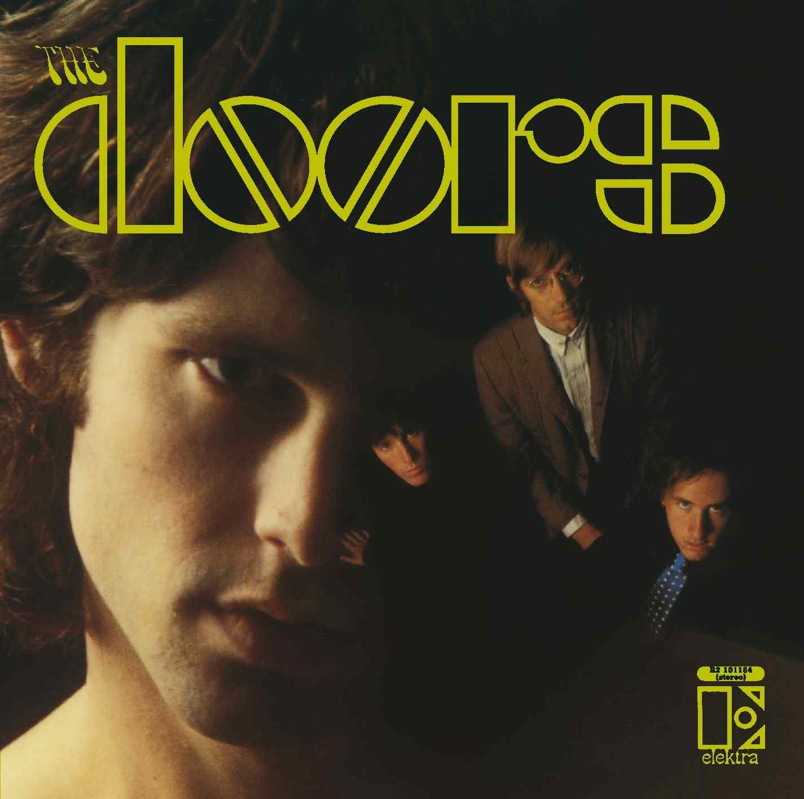

9 - The Doors (1967)
- The Doors

10
The End
9
Break on Through (To the Other Side)
The Crystal Ship
Light My Fire
Soul Kitchen
Take It as It Comes
Alabama Song (Whisky Bar)
Twentieth Century Fox
8
End of the Night
I Looked at You
Back Door Man